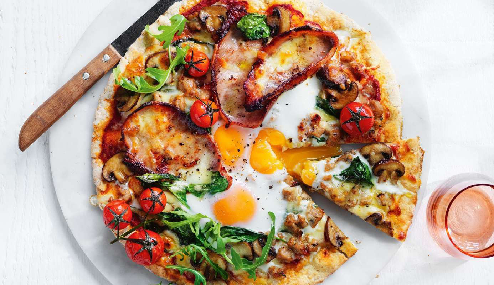

Brekky Pizza
Ingredients
- 1.0 large Wholemeal Pita Bread
- 2.0 short Cut Bacon Rashers
- 40 g Leggo's Pizza Sauce
- 25 g Light Mozzarella
- 20 g Spinach
- 8.0 cherry Tomatoes Halved
- 1.0 egg
- 1.0 extra Lean Beef Sausage (Brand: Peppercorn Food Company Fresh basil
Instructions
- Preheat your oven to 220, also leave tray in oven to pre heat as well.
- Slice sausage and shortcut bacon into small pieces and cook both in fry pan
- Start making pizza by spreading pizza sauce across pita bread, leaving some room at the edges
- Add cooked bacon, sausage, spinach and cherry tomatoes to the party. Leave an egg sized well in the middle of the pizza.
- Crack egg in the well (duh), and sprinkle cheese all over the pizza
- Pop pizza in oven on pre heated tray and cook for 7- 10 minutes or until egg white is cooked through.
- Garnish with chopped fresh basil and enjoy!
Source PDF page 18